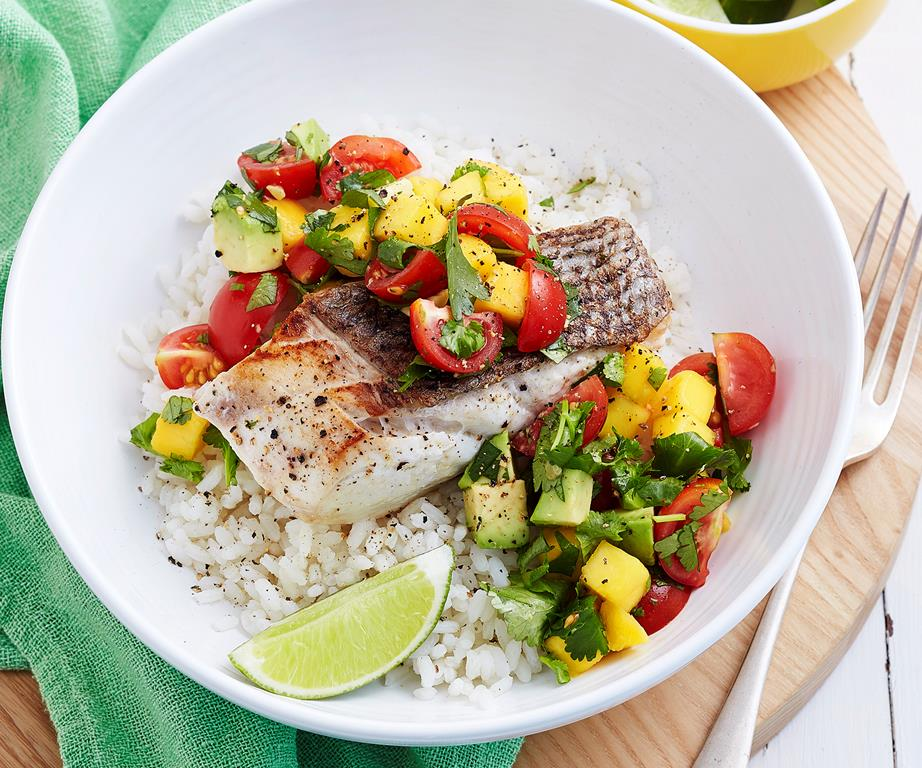

Homepage
Grilled Fish with Mango Salsa and Coconute Rice

Description
Grilled Fish served with mango salsa and coconut rice.
Ingredients
Grilled Fish and Coconut Rice
- 1 /12 cup macro organic jasmine rice
- 400 mililitre can coconut milk
- 1/2 cup water
- 1/2 teaspoon salt
- 4 150g fillets firm white fish
- 1 tbsp woolworths select vegetable oil
Mango Salsa
- 1 mango, seeded, peeled, chopped
- 1 avocado, seeded, peeled, chopped
- 1 punnet cherry tomatoes, quartered
- 1/4 cup coriander leaves, roughly chopped, plus extra to serve
- 2 tablespoon lime juice, plus wedges to serve
Steps
- Place rice in a colander and rinse under cold water until it runs clear. Drain.
- In a medium saucepan, combine the rice, coconut milk, water and salt. Bring to the boil. Reduce heat to low.
- Simmer, covered, for 10-12 minutes, until liquid is absorbed. Remove from heat. Set aside, covered, for 10 minutes.
- Heat a chargrill pan or barbeque grill on high. Brush fish with oil and season to taste. Cook for 2-3 minutes on each side, until just cooked through.
- Meanwhile, make mango salsa: In a medium bowl, combine all ingredients. Season to taste.
- Serve fish topped with salsa and coriander sprigs. Accompany with rice and lime wedges.